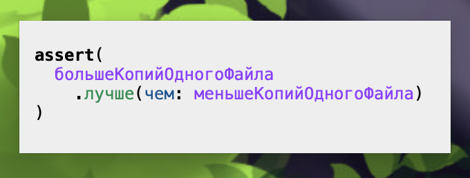

My name is Maria. I'm a software developer and AI researcher. I'm an avid note taker and a digital gardening enthusiast
And this is my digital garden 🌳 I happen to own quite a few of them. Recently I had an epiphany that I should try to keep some amount of my notes in HTML format, for it shall swiftly outlive every other technology I use now
In the next section I will share some insights on how you should live your life
I. HOW TO BEGIN. Arthur Ashe
II. HOW TO PROCEED. Richard Hamming
II. HOW TO END. Marcus Aurelius
Two letter commands were common in UNIX
because they were easy to type, and single letter commands were reserved for the user to define

This page was made in Neovim
Why is Neovim a superior editor?
%s-s
Why not original Vim? I have a story to tell about that. I started using Vim
many, many years ago when I just started the exploring Linux thing.
The default suggested command line editor for LinuxNewbies is
nano
I can't say I like nano. I feel silly when I use it. Using Vim
was more pleasant: I just entered insert mode whenever I opened a file and
got a much more decent editing experience, almost comparable to
gedit
I eventually learned how to use Vim properly, but then I entered my Lisp phase and couldn't afford editing in Vim anymore, because I needed Emacs
I can't say I like Emacs's default keybindings. Learning them is cool because
by learning them you automatically acquire extra shell command editing skills.
The built-in vi1 emulation modes - and I think Emacs has
three of them - weren't very good. Thankfully, there's
evil-mode which I liked so much I couldn't come back to Vim
anymore
Neovim is so much better than Emacs with evil-mode though
End of story
Also, Neovim has a very cool VS Code integration
I had to fill_this_in in_a_hurry, and I didn't pick the numbers carefully, but these are the figures I have to achieve now
| Наименование работы | Семестр | Форма контроля | |||||
|---|---|---|---|---|---|---|---|
| 1 | 2 | 3 | 4 | 5 | 6 | ||
| Научный компонент, в т. ч. промежуточная аттестация (Блок 1) | Заполняется в соответствии с положением "О порядке организации и реализации научных исследований обучающимися" | ||||||
| Предварительная оценка по итогу выполнения данного плана |
5 |
3 |
5 |
4 |
4 |
Зачтено |
|
| Статьи Scopus, Web of Science показатель указывается нарастающим итогом |
0 | 0 | 1 | 1 | 2 | 2 | |
| Статьи ВАК показатель указывается нарастающим итогом |
0 | 0 | 1 | 2 | 4 | 4 | |
| Статьи РИНЦ показатель указывается нарастающим итогом |
0 | 1 | 1 | 2 | 4 | 4 | |
| Участие и победы в грантах, конкурсах, премиях, именных стипендиях показатель рассматривается и оценивается во втором семестре ежегодно по результатам учебного года |
0 | 1 | 1 | 2 | 2 | 2 | |
| Число апробаций результатов исследований на научных конференциях показатель указывается нарастающим итогом |
1 | 2 | 3 | 3 | 4 | 4 | |
| Участие в НИОКТР (показатель указывается нарастающим итогом) | 0 | 0 | 1 | 2 | 2 | 2 | |
| Готовность диссертации (%) | 20 | 30 | 45 | 70 | 95 | 95 | |
не менее 3 в научных изданиях из перечня ВАК, либо RSCI, либо Web of Science или Scopus, из которых не менее 2 из К-1 или К-2 из Перечня ВАК, а также не менее 1 в журналах Web of Science, Scopus.